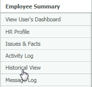
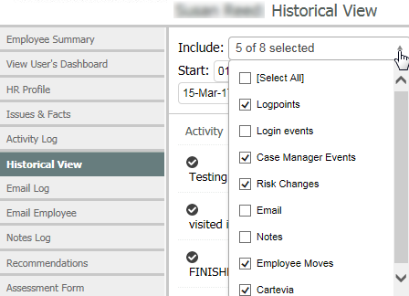
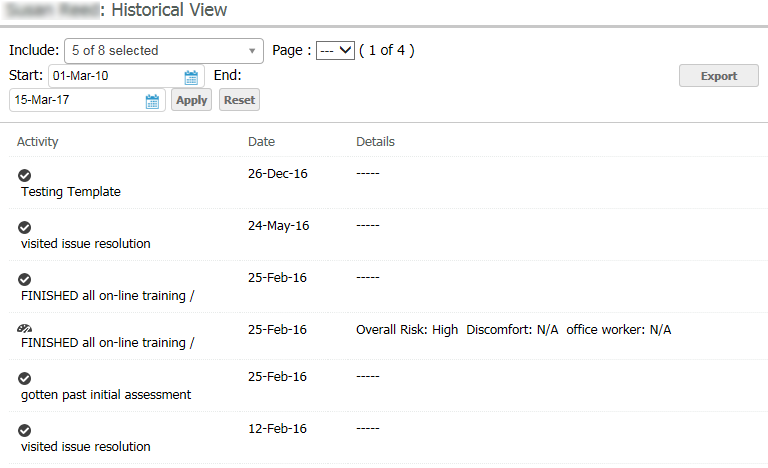

The Historical View of the Employee Summary shows the user history. You can select which types of events you would like to see for the user, and search for events over a time range.
To view a user's system history:
From the Employee Summary, select Historical View from the menu on the left.

Select the types of events you want to include.
Logpoints: Shows Log Points (i.e. activities) from the user's OES Activity Log.
Login events: Shows each time a user has logged in to the OES. Login events are unselected by default.
Case Manager Events: Shows dates Case Manager cases were created and closed for the user.
Risk Changes: Shows changes to the user's risk and discomfort levels.
Email: Shows OES and Case Manager emails sent to the user (similar to the user's Email Log).
Notes: Shows notes in the user's profile from within OES and Case Manager (similar to the user's Notes Log).
Employee Moves: Shows employee moves (if your organization automatically tracks moves via changes to a specific Attribute Type, such as Location, Building, etc.).
Cartevia: Shows historical notes from Cartevia (replaced by Case Manager).


After generating the view, you can export the results to PDF by clicking Export.